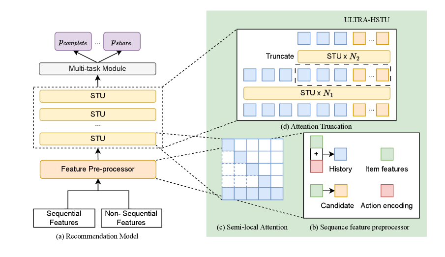
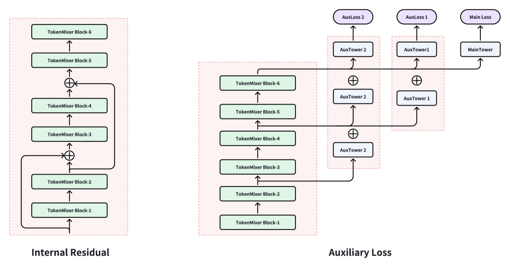
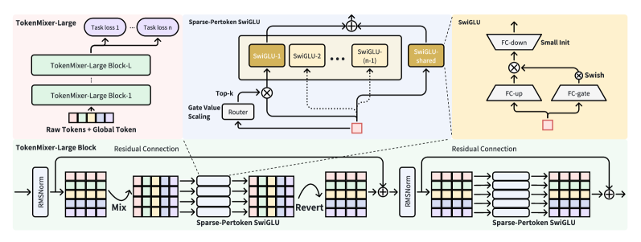

■ 推荐系统正处于算法 Scaling Law 驱动的新一轮进化周期 — 从协同过滤到语义向量，从判别式到生成式与判别式并行
演进路径：DIN → MIMN → SIM → ... 模型越复杂，效果提升越小
候选池(亿级) → 召回(万级) → 粗排(千级) → 精排(百级) → 重排(十级)
传统CTR继承自CPU时代，大量算子是memory-bound Embedding Lookup
破局方向：跳出DLRM架构，用LLM的语义建模能力和Scaling Law突破边际收益递减的玻璃顶
| 架构 | 训练MFU | 推理MFU | 算子类型 |
|---|---|---|---|
| 传统CTR | ~5% | ~7% | Memory-bound |
| HSTU基线 | ~17% | ~17% | TensorCore密集 |
| Kunlun优化 | ~37% | ~37% | TensorCore密集 |
| OneRec-V2 | 62% | 62% | Lazy Decoder · L20 GPU |
核心结论：MFU从5%→62%的跨越，来自架构革新而非硬件堆砌。Lazy Decoder（OneRec-V2）、稀疏注意力（RankMixer/Ultra-HSTU）、统一Transformer（OneTrans）是三条并行路径
标志性事件：2024年Meta GR论文（arXiv:2402.01115）首次提出生成式推荐范式，Facebook主APP实现CTR+12.4%。2025年快手OneRec全量上线，停留时长+1.24%（极速版+1.24%，App+0.54%，核心指标100%正向）。
工程效率标杆：淘宝NEZHA延迟30ms内 · 京东50ms · 阿里RecGPT CTR+5% · 小红书SAGE突破信息茧房
| 类别 | 代表算法 | 核心贡献 | 演进阶段 |
|---|---|---|---|
| 协同过滤 | ItemCF, UserCF, SVD, ALS, Swing | 行为共现，ID为王，稀疏性难解 | 2003-2015 |
| 深度匹配 | YouTube DNN, Wide&Deep, DeepFM, DCN | Embedding+MLP，自动特征交叉，端到端 | 2015-2019 |
| 序列建模 | DIN, DIEN, SIM, MIMN, BST, BERT4Rec | Attention建模序列依赖，兴趣提取层 | 2017-2023 |
| 图神经网络 | GCN, GraphSAGE, GAT, PinSage | 图结构协同信号传播，邻居聚合 | 2018-2023 |
| LLM推荐 | P5, InstructRec, ChatRec, TIGER | 语义表征，零样本泛化，Prompt驱动 | 2023-2024 |
| 生成式推荐 | Meta GR, OneRec, RankMixer, Ultra-HSTU | 端到端生成，NTP损失，语义ID | 2024-Now NEW |
ID是"身份证号"，不是"基因序列"。两个同话题视频在ID层面毫无关联。
为什么用RQ-Kmeans而非RQ-VAE？ RQ-VAE存在codebook collapse，大量token从不被使用。RQ-Kmeans强制均衡聚类。
| 方案 | 核心思路 | 代表工作 | 序列长度 |
|---|---|---|---|
| 滑动窗口 | 截取最近N个行为 | SASRec, BERT4Rec | ~50-100 |
| Memory | 外部记忆网络 | MFM, NRM | ~500 |
| Compressor | 层级压缩summarize | Recformer, Markpts | ~2K-10K |
| LLM Native | 百万Token直接输入 | OneRec, IALM | 100K-1M+ |
| Linear Attn | Mamba/线性注意力降复杂度 | Ultra-HSTU, HSTM | 无限制 |
工业价值：同时覆盖召回+排序两阶段，端到端收益
核心价值：端到端统一建模，简化架构+打破效果天花板
核心价值：稀疏注意力使GPU接近理论MFU上限，Scaling Law曲线被"弯曲"

图(a-d): (a)通用推荐模型设计 (b)输入序列优化 (c)半局部注意力Mask (d)Attention Truncation
核心洞察：Token-Mixing将特征交互拆为token-level（序列依赖）和feature-level（专家路由），避免O(n²) attention同时保持强表达力

上: TokenMixer-Large整体架构 (arXiv:2602.06563 Fig.1)

下: Mixing-Reverting梯度稳定性对比 (arXiv:2602.06563 Fig.2)
| 公司 | 代表工作 | 技术路线 | 激进程度 | 核心收益 | 状态 |
|---|---|---|---|---|---|
| Meta | GR/HSTU → ULTRA-HSTU → VLM | 生成式GR范式，线性注意力Scaling，系统-模型协同 | 渐进+突破 | NDCG+65.8%, 5x训练21x推理, 消费+4% | 开创者，持续深耕 |
| 快手 | OneRec/OneLoc/OneMall/GR4AD/PROMISE | 全场景One系列：生成式→判别式统一架构 | 激进→务实 | 停留时长+1.6%, 统一Scaling框架 | 多场景One系列布局 |
| 字节/抖音 | HLLM/STCA/LEMUR/TRM/MixFormer/MSN/MERGE/UG-Sep | 判别式Scaling，4条主线并行：长序列/输入重写/统一主干/推理优化 | 渐进务实 | 订单+1.66%, 广告ADSS+2.0%, 推理-20% | 全程判别式，最完整布局 |
| 美团 | MTGR → SUAN/HoMer/EGA-V2 | 生成式GR，保留交叉特征，广告端到端 | 深耕渐进 | 65x FLOPs提升, 广告端到端 | 多篇论文积累 |
| 腾讯/Shopee | OnePiece → GPR/OneRanker | 上下文工程 → 广告one-model深融合，三层矛盾处理 | 学术深耕 | GMV+2%/UU, 广告+2.90% | Shopee主搜+广告 |
| 阿里 | LUM/SSR + SORT(判别式另一条路) | 长序列建模 + 显式稀疏性，SORT系统性改造Transformer | 学术低调 | SIGIR 2026, arXiv:2603.03988 | 判别式另一条路 |
| 京东 | xLLM/xGR + OxygenREC | LLM推理引擎优化 + 慢思考快生成拆分 | 工程稳健 | P99延迟控制, 吞吐1.7x MindIE | 开源xLLM |
| 百度 | GRAB | 序列优先CTR, CamA注意力, STS训练策略 | 稳健务实 | CTR+3.49%, 收入+3.05% | 2026年最新 |
| TIGER, Semantic ID | RQ-VAE语义ID, 生成式检索先驱 | 学术先驱 | 冷启动/泛化能力验证 | 2023年首创 | |
| 小红书 | GenRank/NoteLLM + LASER | 生成式重排 + 长序列全栈优化 | 大规模部署 | Explore Feed A/B提升,LASER arXiv:2602.11562 | 长序列全栈优化 |
| Feed-SR (arXiv:2602.12354) | Transformer序列排序，判别式工业落地 | 工程稳健 | RoPE/incremental training/late fusion | 判别式工业标杆 |
数据来源：OneRec(arXiv:2502.18965) · HSTU(arXiv:2402.17152,ICML 2024) · Ultra-HSTU(arXiv:2602.16986) · TokenMixer-Large(arXiv:2602.06563) · GRAB(arXiv:2602.01865,百度) · SSR(arXiv:2605.07275,SIGIR 2026)
核心脉络：TIGER(2023) → Meta GR/HSTU(2024)开创 → 各厂Follow(2025) → 路线分化(2025.6) → 新突破(2026.2)
战略转变：快手是"从激进到务实"的典型代表。生成式OneRec验证了端到端可行性，但面对Scaling Law的不确定性和延迟问题，2026年转向判别式UniMixer，保留现有架构享受Scaling红利。
用Token-Mixing替代全连接层，保持判别式建模但架构升级。Token Mixing+MoE稀疏激活，4.5%→45% MFU提升。
70B/150B参数，Mixing-and-Reverting操作 + Sparse Per-token MoE。订单+1.66%, 广告ADSS+2.0%, 直播+1.4%。
User-Group分离优化推理，TokenMixer用户侧计算复用。推理延迟-20%，W8A16量化。
STCA: stacked attention + request级batching低复杂度
TRM: semantic token破解scaling瓶颈，"Farewell to Item IDs"
LEMUR: 多模态端到端训练 + memory bank控制编码成本
MSN: memory-based稀疏激活，检索式注入个性化参数
MixFormer: sequence/dense co-scaling统一主干协同扩展
MDL: 特征/场景/任务统一建模
字节策略：判别式Scaling优先，全程无激进生成式押注。技术链完整（LLM压缩→TokenMixer→UG-Separation），低延迟高可控，为未来端到端奠定基础。
马进（腾讯）："推荐大模型（判别式Scaling）可能比纯生成式更work...至少到目前为止，头部大厂的主场景，推荐大模型都是百分位的lt收益，而某些生成式推荐，摊手。"
陈东文："生成式推荐是一个企业中层为搏眼球攒项目的工具...没有ground truth，是最大的问题。"
BUGs："同等数据和算力规模下，谁通过生成式范式大幅提点了？生成式不是关键，Scaling Law才是。"
几野："字节早期以判别式Scaling为主，但OneTrans/TRM等生成式组件也在推进；快手转UniMixer(判别式)，阿里无公开工作，腾讯换赛道。"
KiraYeetar："投入产出比说服不了leader干这事儿...资源一般的组还可以再观望一下。"
傅聪Cong（OnePiece发明者）："生成式推荐不是伪范式，而是未来，这是因为传统推荐范式无法具备scaling law。"
青荇无言："底层逻辑从'匹配'转向'生成-推理'...当算力成本继续下降，这种'压缩即性能'的路线会进一步放大优势。"
九河之间："字节RankMixer在判别式精排模型上实现了Scaling Law——'极致进化'而非'范式革命'。当前判别式仍是基石，生成式是前沿探索。"
Xavier："重要的不是目前已有的生成式方法孰优孰劣，而是在头部搜广推业务里，模型、数据规模见顶的情况下，到底下一步应该怎么走。"
王喆："生成式推荐的价值在于突破协同过滤的信息茧房，世界知识注入是核心优势。"
讨论焦点总结：知乎讨论围绕两个核心问题：①是否具备Scaling Law（决定天花板高度）和②ROI是否为正（决定工程落地价值）。三方观点：快手转向UniMixer（判别式）、字节判别式Scaling为主+生成式组件并行探索、Meta ULTRA-HSTU持续深耕生成式；以及工程务实派（不关心范式，只关心混合架构和推理效率能否落地）。
核心共识：生成式推荐的价值在于增强召回和广告端到端生成双轨并行。快手OneRec/字节RankMixer验证可行性，渐进融合是现实路径，端到端生成已在广告场景加速落地。
技术路线分化（2025.6后）：生成式路线 Meta ULTRA-HSTU持续深耕（18层16k序列、AT/MoT动态拓扑、混合精度）vs 判别式Scaling路线 字节TokenMixer-Large主导（70B/150B参数、UG-Separation推理-20%）。
| 落地层级 | 代表工作 | 实际效果 | 专家评估 |
|---|---|---|---|
| 已上线验证 | 快手OneRec, Meta GR, 字节RankMixer | 停留时长+0.5~1.2%, 订单+1.66% | GuoXun、王喆等认可 |
| 积极推进中 | 字节TokenMixer-Large, Meta ULTRA-HSTU, 美团MTGR | 70B/150B参数Scaling，推理-20%；MTGR实为判别式CTR精排（论文用AUC评估，非生成式） | walsonyang等支持 |
| 研究跟进中 | 阿里SSR, 百度GRAB | 学术验证，规模落地待验证 | 理论突破，成本待优化 |
| 存疑观望 | 端到端纯生成式召回 | 收益不稳定，Ground Truth缺失 | 陈东文、马进等质疑 |
2026年前沿方向：显式稀疏性(SSR SIGIR 2026) · 序列训练策略(GRAB) · 信息瓶颈理论(UniMixer) · 状态空间模型(SUAN/Mamba) · LLM推荐Scaling Law(首个幂律验证)
关键趋势：快手从生成式OneRec转向判别式UniMixer；字节全程判别式Scaling；Meta坚持生成式GR路线持续深耕ULTRA-HSTU。
昇腾推荐团队的核心定位：支撑互联网客户从GPU平台迁移到昇腾平台，或在昇腾平台原生开发新一代推荐模型。生成式推荐的技术浪潮为昇腾提供了差异化窗口期。
PyTorch API兼容、FBGEMM/HKV算子对齐、迁移工具链
TorchRec-V2生成式框架、Recsys-GR完整适配、训推一体
PyTorch版本同步、arXiv新论文1个月适配、Benchmark建设
| 行动项 | 优先级 | 预期收益 | 建议 |
|---|---|---|---|
| PyTorch API兼容度提升至95%+ | P0 立即 | 客户代码零改动迁移 | 消除迁移阻断项，建立透明替换接口 |
| FBGEMM/HKV算子性能对标NVIDIA | P0 立即 | Sparse Embedding性能不输GPU | 推荐模型最大瓶颈，昇腾差异化竞争点 |
| Recsys-GR（Meta GR/HSTU）完整适配 | P1 Q3 | 生成式推荐训练完整支撑 | 3个月内完成HSTU融合算子实现 |
| Ascend-RecBench独立代码仓建设 | P1 Q3 | 客户决策支撑，销售武器 | 扩充模型至60+，自动化HTML报告 |
| Ascend-RecServe推理框架整合 | P2 Q4 | 推理延迟降低20%+ | 整合vLLM-ascend + AOTI + 动态Batch |
| 前沿模型快速适配通道 | P3 探索 | arXiv论文1个月内完成算子需求分析 | 建立快速跟进机制不掉队 |
| 生态组件 | 当前状态 | 改进重点 |
|---|---|---|
| torch_npu | 约85% API兼容，动态Shape部分支持 | 提升至95%+，补充PyTorch新版本API，禁用JIT编译开销 |
| RecSDK算子库 | 30+ Ascend C算子（hstu/token_mixing/ln_mul） | FBGEMM/HKV性能对标CUTLASS，HSTUAttention完整实现 |
| TorchRec-V2 | 生成式推荐框架基础样例可用 | Recsys-GR完整适配，支持16K+序列，端到端生成推理 |
| vLLM-ascend | 2.2k stars，持续同步vLLM最新版本 | 整合为RecServe核心后端，PagedAttention昇腾实现 |
| AOTI编译 | 基础可用，文档较少 | 提升文档覆盖，BF16/FP8/INT4混合精度，内存优化 |
感谢聆听
欢迎提问与讨论